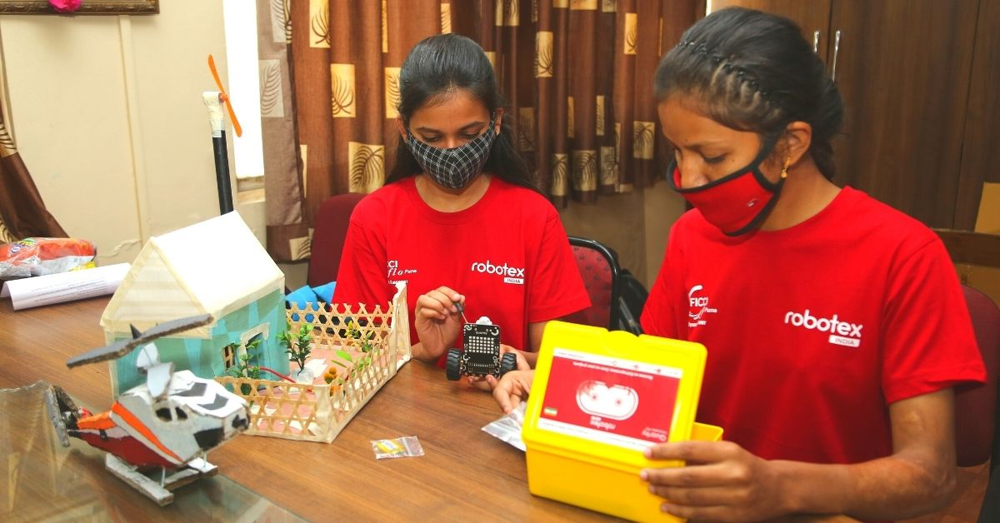

Major Programs Supporting Innovation
- Atal Innovation Mission & Atal Tinkering Labs (ATL)
- CBSE Skill Subjects (AI, Coding, Design Thinking, Entrepreneurship)
- SOAR – Skilling for AI Readiness
- Startup India & Fund of Funds
- PM Research Fellowships
- KITE & State Incubators
These programs bring labs, mentors, competitions, and startup training to every student—bridging the rural-urban divide.
